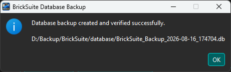

BrickSuite stores the working state of your brick workshop in its database. A database backup creates a snapshot that can be kept separately and later restored if you need to return BrickSuite to that saved state.
Backups protect important working data such as Workspaces, Storage locations, inventory, movement history, Builds, requirements, allocations, and other information maintained in the BrickSuite database.
Choose BrickSuite's database backup command and select where the backup file should be saved. A location outside the normal application data folder is useful because it keeps the backup separate from the working database.

Review the proposed filename and destination before saving. You may keep multiple backups when you want snapshots from different points in time.
After the database has been copied successfully, BrickSuite confirms that the backup operation completed.

Keep important backup files somewhere appropriate for your normal computer-backup practices. A BrickSuite database backup is most useful when it remains available even if the working copy of the database is damaged, deleted, or replaced.
Restore is the reverse operation. Choose BrickSuite's restore command and select the known-good backup file that contains the database state you want to recover.

Before proceeding, make sure you selected the intended backup. If the current database contains changes that you may want later, create a fresh backup of it first.
Because restoring can replace newer working data, BrickSuite asks for confirmation before performing the operation.

Read the confirmation carefully and choose Yes only when you intend to replace the current database with the selected backup. Choose No to leave the current database unchanged.
When the restore completes successfully, BrickSuite reports the result.

The working database now reflects the state stored in the restored backup. Data or changes made after that backup was originally created will not be present unless they were preserved elsewhere.
Current BrickSuite Database
|
Backup
|
v
Backup File
(saved snapshot)
Backup File
|
Restore
|
v
Current BrickSuite Database
returns to the saved state
Think of the database as BrickSuite's record of your digital workshop. Protecting it means protecting much more than a list of parts: it preserves the relationships between inventory, physical Storage, history, and Build activity.
Database Backup / Restore protects information stored in the BrickSuite database. Application preferences are a separate concept. See Settings for the options BrickSuite maintains as application settings.
If a backup or restore operation reports an error, do not repeatedly overwrite files while trying different combinations. Preserve the current database and the backup file, then review the Application Log and Troubleshooting topics for diagnostic guidance.